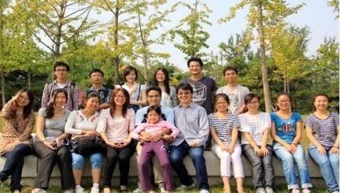

光传输系统研究室
一 研究室负责人介绍
乔耀军： 男，副教授，博士生导师、2000年博士毕业后，先后在著名的通信设备公司朗讯（Lucent）和富士通（Fujitsu）工作7年，从事光传输产品设计、开发和关键技术的研究，具备丰富的产品研发经验。2007年至今到北京邮电大学从事超100G光传输系统关键技术研究。在十几年的研究经验中，研究内容覆盖2.5G、10G、40G、100G和T比特级光传输系统，发表SCI/EI检索论文60余篇，申请专利20余项，学术水平在国内外处于领先地位。先后主持和参加了国家自然科学基金、国家863项目，主持于华为、中兴和富士通等公司的合作项目若干。
主要研究方向： 高速光纤传输系统和下一代接入网络等
二 研究室成员
组长：徐艳飞
成员：陈龙泉、徐菲、赵远征、宋北平、钱文辉、丁福玲、王哲、李亚楠、王蕾、李青、李瑗洁、周骥、李明、刘祖峰、杨秋虹、于倩、闫瑜
